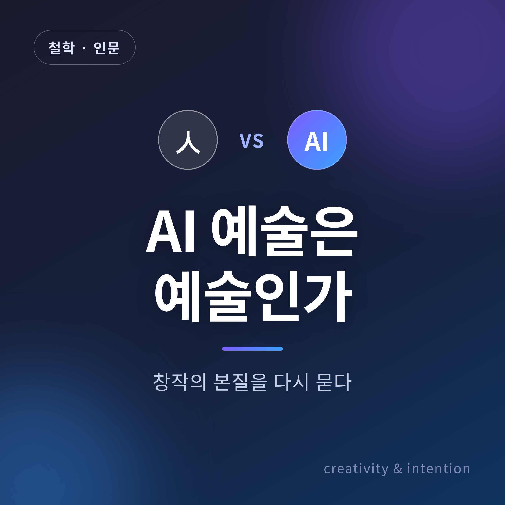
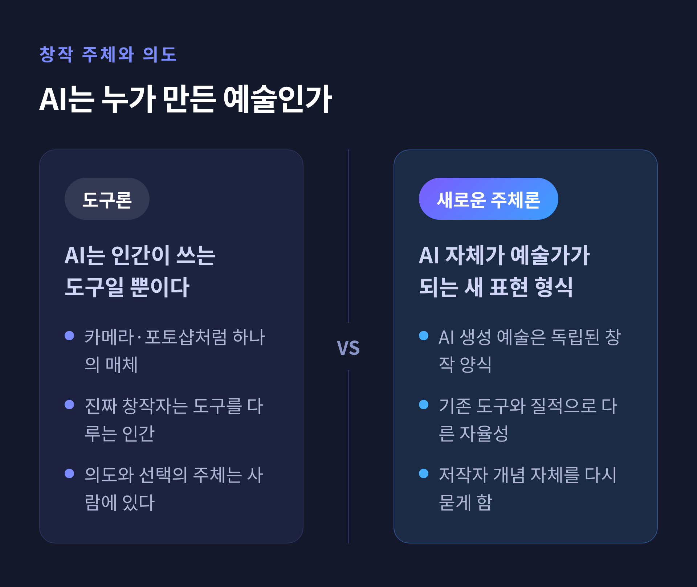
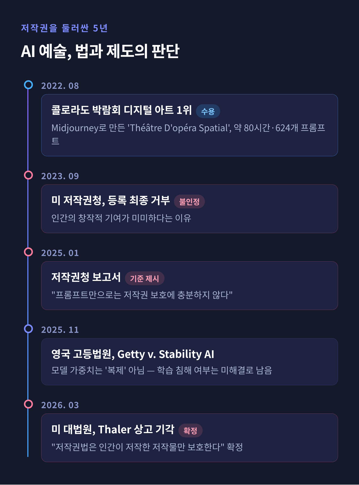

AI 예술은 예술인가 — 창작의 본질을 다시 묻다
이번 글에서는 'AI 예술은 예술인가'라는 질문을 정리해 보겠습니다.
한쪽으로 결론을 미리 내리지 않고, 찬반 양쪽의 근거를 나란히 놓고 함께 따져보려 합니다.
판례와 연구 결과는 확인된 사실만 인용했습니다.

왜 지금 다시 '예술의 정의'를 묻는가
생성형 AI가 이미지와 음악과 글을 빠르고 능숙하게 만들어냅니다. 그러자 오래된 질문이 다시 첨예해졌습니다. "창작이란 무엇인가." "예술가는 누구인가."
흥미로운 연구가 하나 있습니다. 최근 실험에서 AI가 생성한 이미지는 일반 관객과 전문가 모두에게서 인간 예술과 통계적으로 동등한 미적 평점을 받았습니다. 단일 이미지를 두고는 도메인 전문가조차 AI와 인간의 작품을 구별하는 정확도가 우연 수준에 머물렀습니다.
즉 '보기에' AI 예술은 이미 인간 예술과 분간하기 어렵습니다. 다만 같은 과제에서 사람들은 AI가 인간보다 '노력'을 덜 들였다고 평가했고, 그 인식이 작품 평가에 영향을 주었습니다.
논쟁의 지형은 크게 다섯 갈래입니다. 창작 주체와 의도, 독창성 대 모방, 예술의 정의, 저작권·노동 논쟁, 그리고 인간 예술가의 역할 변화입니다.
누가 만들었는가 — 창작 주체와 의도
전통적으로 예술은 인간의 의도와 감정, 체험과 분리할 수 없는 것으로 여겨졌습니다. 창작은 깊이 개인적인 일이고, 예술가의 고뇌와 기쁨과 고유한 관점에 뿌리를 둔다고 보았습니다.
AI가 스스로 예술적 콘텐츠를 만들어내자 저작자라는 개념이 흐려집니다. 누구를 창작자로 보아야 할까요. AI인가, 프롬프트를 쓴 사람인가, 모델을 만든 개발자인가, 학습 데이터를 제공한 원작자들인가.
여기서 상반된 두 입장이 맞섭니다.
하나는 도구론입니다. AI는 인간이 쓰는 도구일 뿐이라는 견해입니다. 카메라나 포토샵처럼, 진짜 창작자는 그것을 다루는 인간이라는 것이지요.
다른 하나는 새로운 주체론입니다. AI 생성 예술은 AI 자체가 예술가가 되는 새로운 표현 형식이라는 견해입니다.

진짜 새로운 것인가, 재조합인가
독창성을 둘러싼 다툼도 팽팽합니다.
비판하는 쪽은 이렇게 말합니다. AI의 창의성은 순전히 계산적이며, 전통적 예술을 정의하는 열정적 동기와 개인적 서사, 정서적 깊이가 결여돼 있다. AI는 기존 데이터를 재조합할 뿐, 독창적 개념이 아니라 파생물을 만든다.
옹호하는 쪽의 근거는 다릅니다. 창의성을 산출물 기준으로 본다면, 창의성이란 '새롭고 가치 있는 것'을 만들어내는 일입니다. AI도 방대한 데이터를 처리하고 새로운 연결을 만들어 역사적으로 새로운 산물을 내놓을 수 있다는 것이지요.
중간 지대도 있습니다. 일부 창발론은 AI가 복잡성을 키워가며 의식 없이도 일종의 창의성이 창발할 수 있다고 봅니다. 다만 기계는 자율적 행위성과 의도적 이해, 체험을 결여합니다. 이것들이 인간 사고에 의미를 부여하는 요소라는 점에서 한계는 분명합니다.
한쪽으로 단정하기는 어렵습니다. 학계에서도 AI 예술의 미적 가치에 일부 한계는 인정하되, 전반적으로 부정적인 입장은 정당화되지 않는다는 작업이 나오고 있습니다.
어떤 잣대로 판단할 것인가 — 미학의 두 이론
결국 이 논쟁은 "예술이란 무엇인가"라는 오래된 질문으로 돌아갑니다. 서로 다른 두 이론을 견주면 쟁점이 또렷해집니다.
먼저 표현론입니다. 톨스토이와 콜링우드의 계보지요. 예술이란 예술가가 자신의 감정을 외적 기호를 통해 수용자에게 전달하는 것입니다. 톨스토이는 예술을 "예술가로부터 수용자에게 감정을 전이시키는 것"으로 정의했습니다. 이 잣대를 대면 AI는 전달할 내적 감정 자체가 없으므로, AI 산물은 예술이 아닐 수 있습니다.
다음은 제도론입니다. 단토와 디키의 계보입니다. 예술은 그것을 예술로 인정하는 사회·문화적 제도, 곧 '예술계'에 의해 정의됩니다. 디키의 초기 정의에 따르면, 예술작품이란 인공물이면서 예술계를 대표하는 사람이 '감상의 후보' 지위를 부여한 것입니다. 이 잣대를 대면 갤러리와 미술관, 비평가와 관객이 인정할 때 AI 산물도 예술이 됩니다.
예전엔 창작자의 내면이 기준이었습니다. 지금은 사회적 승인이 또 하나의 기준으로 나란히 섭니다. 같은 작품을 두고도 어느 이론에 서느냐에 따라 답이 갈리는 셈입니다.
누구의 권리이고 누구의 노동인가
2026년 현재, 법정의 판단은 한 방향으로 가닥이 잡혔습니다.
2026년 3월 2일, 미국 대법원은 Thaler v. Perlmutter 사건의 상고를 기각했습니다. 이로써 "저작권법은 인간이 저작한 저작물만 보호한다"는 항소법원 판결이 그대로 확정됐습니다. Thaler 박사는 AI가 전적으로 생성한 그림의 저작권을 AI를 유일한 저작자로 기재해 신청했고, 프롬프트조차 주지 않았다고 밝혔습니다.
미국 저작권청도 2025년 1월 보고서에서 프롬프트만으로는 저작권 보호에 충분하지 않다고 못박았습니다. 프롬프트는 보호받을 수 없는 아이디어를 전달하는 지시로 기능한다는 것입니다. 다만 인간의 개입 정도에 따라 AI 보조 저작물은 보호받을 수 있다고 보았습니다.
대회의 사례도 상징적입니다. 2022년 8월, Midjourney로 만든 'Théâtre D'opéra Spatial'이 콜로라도 주립 박람회 미술 대회의 디지털 아트 부문에서 1위를 차지했습니다. 작가 Jason Allen은 최소 624개의 프롬프트와 수정을 거치고, 포토샵으로 편집하며 약 80시간을 들였다고 밝혔습니다. 두 심사위원은 그것이 AI라는 사실을 몰랐지만, 알았더라도 1위를 줬을 것이라고 했습니다. 그러나 2023년 9월, 저작권청은 인간의 창작적 기여가 미미하다며 등록을 최종 거부했습니다.
학습 데이터를 둘러싼 다툼도 뜨겁습니다. 시각 예술가 집단은 자신의 원작을 동의 없이 학습에 쓴 것은 사실상 절도라며 소송을 냈습니다.

2025년 11월 4일, 영국 고등법원은 Getty Images 대 Stability AI 사건을 판결했습니다. 법원은 AI 모델의 가중치가 영국 저작권법상 이미지의 '복제'가 아니라고 판단해 핵심 저작권 주장을 기각했습니다. 다만 과거 Getty 워터마크가 표시된 합성 이미지를 생성한 점은 제한적으로 상표권 침해가 인정됐습니다. 그런데 Getty는 학습이 영국 안에서 이뤄졌다는 증거가 없음을 인정했습니다. 그래서 "저작물로 AI를 학습시키는 것 자체가 침해인가"라는 근본 질문은 미해결로 남았습니다.
창작자에서 큐레이터로 — 인간의 역할 변화
마지막 갈래는 인간 예술가 자신의 자리입니다.
2026년 현재 AI는 단순한 콘텐츠 생성기에서 창작 협업자로 이동했습니다. 예술가의 역할도 실행자에서 디렉터로 옮겨가고 있습니다. AI가 반복적인 기술 작업을 처리하고, 사람은 더 많은 선택지 속에서 창작적 결정을 내립니다.
AI가 유능해질수록 인간의 일은 '큐레이션'으로 무게를 옮깁니다. 새로운 솜씨는 원천 소재를 고르고, 제약을 정의하고, 무엇을 배제할지 결정하는 데 모입니다. AI 트레이너, 데이터 큐레이터, 프롬프트 전략가 같은 새 직군도 등장했습니다.
다만 과제도 함께 지적됩니다. 인간의 창작적 행위성과 분별력, 진정성이 큐레이션 실천에 계속 자리해야 한다는 것입니다. 스탠퍼드 연구진이 AI를 대체재가 아니라 인간 창의성을 더 잘 증강하는 협업 파트너로 설계하려는 흐름도 같은 맥락입니다.
정리하며
AI 예술이 예술인지 아닌지는 하나의 답으로 떨어지지 않습니다. 표현론에 서면 아니고, 제도론에 서면 그렇습니다. 법은 순수 AI 산물에 저작권을 주지 않지만, 미술관과 대회는 이미 그 작품을 받아들이고 있습니다.
어쩌면 더 정직한 답은 스펙트럼일지 모릅니다. 인간의 창작적 기여가 전혀 없는 자동 생성부터, AI를 여러 도구 중 하나로 깊이 의도해 쓴 하이브리드 작업까지 — 그 사이 어딘가에 각각의 작품이 놓입니다.
"질문은 'AI가 예술을 만드는가'가 아니라, '그 안에 인간의 의도가 얼마나 담겼는가'인지도 모릅니다."
AI가 만든 그림 앞에서 우리가 끝내 묻게 되는 것은, 결국 사람의 자리가 어디인가 하는 물음이 아닐까 싶습니다.